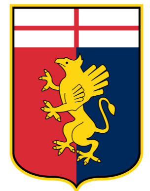
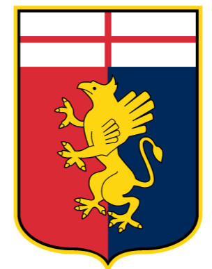

Головна
 

| Команда | Початок | Кінець | Термін | Матчі | В | Н | П | % перемог |
|---|---|---|---|---|---|---|---|---|
| Збірна України | 15/07/16 | 01/08/21 | 1843 дня | 52 | 25 | 13 | 14 | 48 |
| Дженоа | 07/11/21 | 15/01/22 | 69 днів | 11 | 1 | 3 | 7 | 9 |
Вперше ФФУ запропонувала Андрію Шевченку посаду головного тренера збірної ще в листопаді 2012 року, але він відмовився через відсутність тренерсько ліцензії і бажання закінчити навчання.
В лютому 2016 року він увійшов до тренерського складу збірної й допомагав готувати її до Євро-2016, приймав у ньому участь. Після провалу збірної на Євро (поразка у всіх трьох матчах в групі) Андрій Шевченко замінив на посаді головного тренера Михайла Фоменко.
З командою не зміг класифікуватись на ЧС-2018, але зміг вивести її на Євро-2020. На самому турнірі збірна дійшла до чвертьфіналу, у якому поступилася збірній Англії. У 2020му році вивів збірну в дивізіон А Ліги Націй.
Після відставки зі збірної влаштувався на посаду головного тренера в італійсьому клубі Дженоа, який саме знаходився в зоні вильоту. Змінити ситуацію Андрієві не вдалося, через що його було звільнено через два місяці.